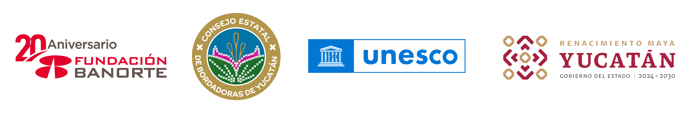

Este plan es un instrumento estratégico y participativo creado para proteger, revitalizar y promover el bordado artesanal maya yucateco como una expresión viva del patrimonio cultural. Fue desarrollado con la colaboración de más de 350 bordadoras provenientes de 23 municipios, en conjunto con la UNESCO, financiado por Fundación Banorte y respaldado por el Gobierno del Estado.
Los Planes Estatales de Salvaguardia son documentos diseñados para preservar y fortalecer expresiones culturales vivas, como el arte textil, en regiones específicas. Su elaboración se basa en la participación activa de las comunidades portadoras. Cada plan incluye un catálogo de acciones priorizadas, adaptadas a los contextos locales.